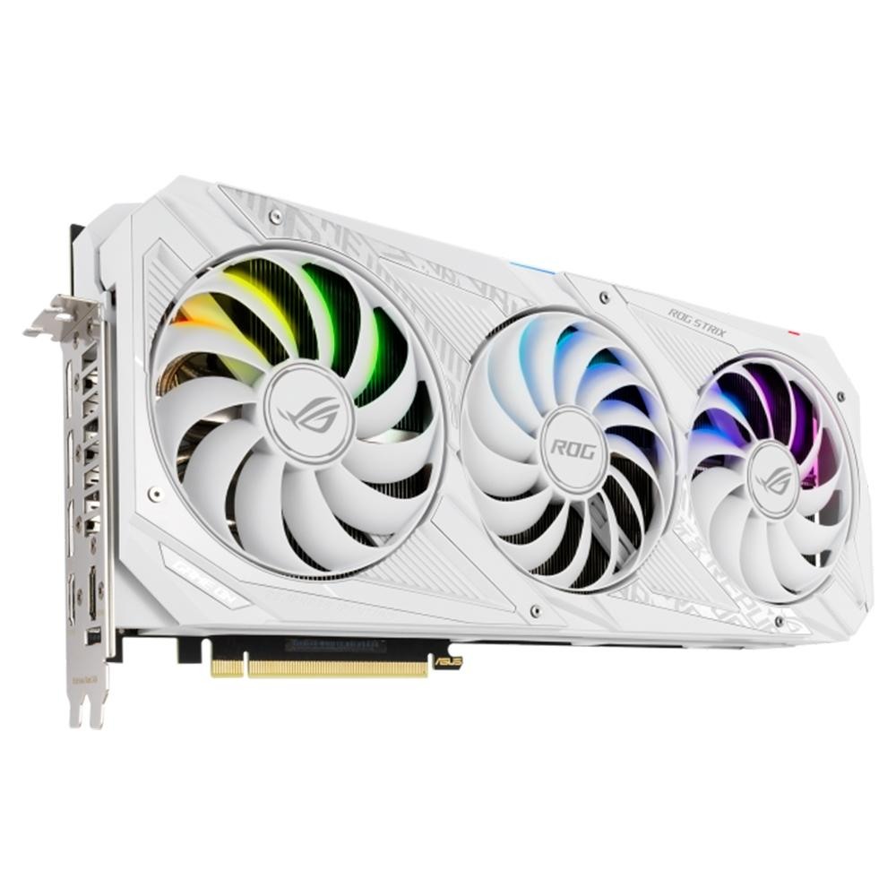

Em seu review sobre o recém-anunciado Razer Blade 17 2022 , o canal Geekerwan trouxe diversos detalhes sobre a GPU GA103, novo chip que equipa a RTX 3080 Ti mobile , anunciada durante a CES 2022. Além de fotos detalhadas do componente, o vídeo traz mais detalhes das especificações, que sugerem que veremos a solução estrear em placas para desktop futuramente.
A análise, em chinês, conta com informações detalhadas sobre o GA103, identificado mais especificamente como GA103S/GA103M, com código GN20-E8-A1. A novidade traz uma versão reduzida que equipa a RTX 3080 Ti para notebooks, mas segundo estimativas de Geekerwan, tem em sua configuração máxima 7.680 núcleos CUDA, 240 Tensor Cores para processamento de IA e 60 RT Cores para Ray Tracing.
Geekerwan fotografou e detalhou o GA103, chip que equipa a RTX 3080 Ti para laptops (Imagem: Geekerwan/YouTube) O chip contaria ainda com 10 canais de memória de 32-bit, para uma interface total de 320-bit, e apresenta área de 496 mm², tamanho cerca de 26,5% maior que o GA104 que equipa o restante da família RTX 3000 mobile, entregando 25% mais núcleos. Curiosamente, isso torna o componente mais robusto que a RTX 3070 para desktops, ao menos no papel, e desconsiderando as diferenças de energia e refrigeração.
Para a RTX 3080 Ti de notebooks, a Nvidia ajustou o chip para entregar 7.424 núcleos CUDA, 232 Tensor Cores, 58 RT Cores, clocks de até 1.590 MHz, 16 GB de VRAM GDDR6 a 16 Gbps, interface de 256-bit, largura de banda de 512 GB/s, consumo de 80 W a 150 W (175 W com Dynamic Boost 2.0) e poder computacional de até 23,6 TFLOPs
O GA103 é 26,5% maior que o GA104, empregando 25% mais núcleos (Imagem: Geekerwan/YouTube) Vale destacar, no entanto, que a Nvidia ainda não divulgou o diagrama oficial completo do GA103, e é possível que haja diferenças sobre as estimativas realizadas pelo canal para as especificações completas da GPU. Dito isso, não deve demorar muito para que mais informações sejam reveladas, caso os rumores da chegada da solução aos desktops se confirme.
Até o momento, o GA103 equipa exclusivamente a RTX 3080 Ti mobile, mas diversos rumores já sugeriram que o chip deve ser trazido aos desktops em breve. As informações mais recentes indicam que uma nova variante do componente deve ser utilizada em uma versão revisada da RTX 3060 Ti, atualmente equipada com uma das variações do GA104.
Vazamentos já indicaram que uma nova versão da RTX 3060 Ti deve receber o GA103 (Imagem: PCI Devices DB/VideoCardz) Acredita-se que a nova RTX 3060 Ti contaria com uma versão ainda menor, com 4.864 núcleos, o que equivaleria a 60% da configuração máxima. A vantagem de utilizar o GA103, neste caso, é aumentar a produção, já que há apenas um modelo equipado com a solução, e tirar melhor proveito do rendimento de produção, já que unidades defeituosas poderiam ser encaminhadas para a placa. Ainda assim, considerando a capacidade do chip, é provável que o vejamos sendo utilizado em outra placa mais poderosa. Uma possível candidata é a RTX 3070 Ti de 16 GB, vazada por diversas vezes e ainda não anunciada pelo time verde. A placa poderia seguir os passos da RTX 3080 de 12 GB e entregar configurações mais robustas, como o GA103 completo e clocks mais altos, para se diferenciar da RTX 3070 Ti disponível no mercado.
Fonte: Geekerwan| LISTA DE PLACAS DE VIDEO ATUAIS | |
|---|---|
| RTX 3050 | RX 6500XT |
| RTX 3060 | RX 6600 |
| RTX 3060Ti | RX 6600XT |
| RTX 3070 | RX 6700XT |
| RTX 3070Ti | RX 6800 |
| RTX 3080 | RX 6800XT |
| RTX 3080Ti | RX 6900XT |
| RTX 3090 |
Clique aqui e saiba mais sobre processadores
ALEXANDRE AFONSO SILVA
ALUNO INFNET
DESENVOLVEDOR FULL STACK
trabalhando juntos ...